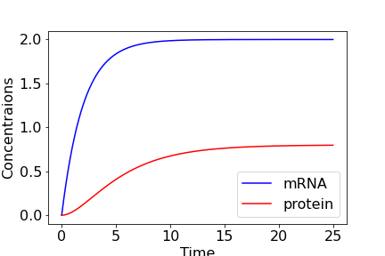

14 - Regulation of expression in a single gene
Contents
14 - Regulation of expression in a single gene¶
In the next part of the module, we will look at models for the regulation of gene expression in cells, and how simple feedback loops underlie some of the basic dynamics that cells exhibit: regulation, switching, and oscillation. Before we do this, it is important to have at least a basic idea of what it is we are trying to model.
A quick guide to cells and genetic networks¶
All living things are made of cells - self-contained structures bounded by a cell membrane (and sometimes also a cell wall). Many organisms exist predominantly as single cells (unicellular, e.g. bacteria, amoebae), while others exist as patterned collections of cells (multicellular, e.g. animals, most plants). While different cells possess and maintain a well-defined identity (which is how we can name them), they are far from static structures, and depend on balanced dynamical processes. Mathematical modelling plays an important role in understanding these dynamical processes and how they are regulated in cells.
Unicellular organisms encounter variable environments, and therefore need to be able to adapt their behaviour. For example, a bacterium living in your gut will have to adapt its metabolism to whatever food you present it with. Adaptability often requires a cell to switch between different behaviours (e.g. between metabolising different types of sugar). Multicellular organisms often develop from a single cell through sequential rounds of cell division (the process in which a cell duplicates its contents and then splits to make two cells). However, the cells in multicellular organisms do not remain identical to each other, but take on stable and well-defined characteristics, so we can talk about skin cells, liver cells,muscle cell, blood cells, etc. in a meaningful way. This adoption of distinct well-defined characters is called differentiation, and again requires cells to be able to switch their behaviour.
How do cells manage to change or switch their state in a coherent way? They use a combination of information from their environment and internal mechanisms. Central to the internal mechanisms are what we call genetic regulatory networks (or gene networks). Almost all cells contain large structures centred on DNA (deoxyribonucleic acid). For our purposes, DNA can be viewed as a set of long, linear sequences of letters (A, C, G and T). This sequence is highly stable, is accurately copied during cell division, and is identical in all cells of a multicellular organism. The full DNA sequence in a cell is referred to as the genome.
How is the genome involved in the regulation of the state of a cell (either stably maintaining it or switching it)? A key concept is that of the gene, and the basic unit of dynamics that we will concern ourselves with in this module is the expression of a gene. For our purposes, a gene is a defined subset of the DNA sequence that can code for (i.e. be copied, or transcribed to) an mRNA molecule. In turn the mRNA produced from the gene codes for (i.e. can be translated into) a particular protein molecule. We will refer to the regulated production and degradation of the mRNA and protein corresponding to a gene as the expression of that gene. The amount of the gene itself does not change, and so the dependent variables of our models will be the concentrations of mRNA and protein in a cell.
In the next section, we will consider the regulated expression of a single gene. In later sections, we will consider how genes can interact by regulating each others’ expression. We will again focus exclusively on differential equation models, in which the concentrations/amounts of mRNA and protein are represented by continuous variables. These are essentially population models, just like the ones in the module so far.
A first model¶
In this section, we consider the dynamics of gene expression in two scenarios:
The expression of the gene is regulated by a transcription factor whose concentration is given as a function of time.
The expression of the gene is regulated by its own protein product (which is therefore a transcription factor).
The models have two dependent variables:
\(M(t)\) : the concentration of mRNA.
\(P(t)\) : the concentration of protein.
The dynamics of \(M(t)\) and \(P(t)\) are regulated by production and degradation. In this context, the molecular processes underlying the production of mRNA and protein are called transcription and translation, respectively (see above).
We will make the following assumptions:
The rates of mRNA and protein degradation are proportional to their concentration (i.e. degradation is linear ).
The rate of translation is proportional to the mRNA concentration (i.e. translation is linear ).
Then the general form of the models, written as a pair of ordinary differential equations, is
where \(\mu\) is the degradation rate of mRNA, \(\nu\) is the degradation rate of protein, \(k\) is the translation rate, and \(R(t)\) is the transcription rate. Note that for the model to make sense biologically, \(\mu\), \(\nu\) and \(k\) must be positive constants, and \(R(t) \geq 0\). Note also that if \(R(t)\) is not constant, then the model will not go to an equilibrium.
Time-courses¶
Starting with the dynamics of mRNA expression, we see that it is independent of \(P\), so we can solve it in isolation by using an integrating factor. We have
Have a go
Using an integrating factor, show that the solution is,
It looks like the function \(R(t)\) is going to be very important for how the time course plays out. Let us initially assume that \(R(t)=r\), that is, it is constant. As such we can simplify the equation to,
Recalling how we integrate exponenitals, we can then find,
where \(C\) is a constant of integration. Now let us assume we know the initial concentration of mRNA at time \(t=0\) is \(M_0\). We can use this to find our constant of integration as,
Substituting back in allows us to reach the final expression of,
From this we can see that as \(t\to\infty\) the concentration will tend towards an equilibrium value of \(M=r/\mu\). Also, as the expression shows we have exponential decay or growth, we can get an idea of the speed at which the concentration approaches the equilibrium by finding its half-life. In particular, assume that \(M_0=0\) (i.e. there is no mRNA until time 0 when we “switch the gene on”). This means,
Half the equilibrium value will be \(r/(2\mu)\). If we call the time at which this value is reached \(\tau\), then we have,
Some inspection finds that this requires \(e^{-\mu\tau}=1/2\), meaning \(\tau=\ln(2)/\mu\). Therefore the faster the degradation rate of the mRNA, the more slowly it reaches its equilibrium.
What about the time-course of \(P(t)\)? Now that we have an expression for \(M(t)\) we can also turn the equation for \(dP(t)/dt\) into a linear ODE, and can again use an integrating factor.
Let us again assume \(M(0)=M_0=0\) and also that \(P(0)=P_0=0\). We just found that in this case \(M(t)=r/\mu(1-e^{-\mu t})\). Therefore,
We need to consider the cases where \(\nu=\mu\) and \(\nu\neq\mu\) separately.
\(\nu=\mu\)
With the initial condition \(P(0)=0\) we can find that \(C=0\), and we can re-arrange slightly to give,
\(\nu\neq\mu\)
Hopefully you can see from this expression why we needed to take the case \(\nu=\mu\) separately. Recalling we set \(P(0)=0\) we can calculate the constant of integration \(C=\mu/(\nu(\nu-\mu))\).
Have a go
Substitue in the expression for \(C\) and rearrange to find the final solution,
\begin{equation} P(t)=\frac{kr}{\mu\nu}\left(1+\frac{\mu}{\nu-\mu}e^{-nu t}-\frac{\nu}{\nu-\mu}e^{-\mu t}\right).
In either case we see that as \(t\to\infty\), \(P\to kr/(\mu\nu)\). The figure below shows the time-course of the system for some example parameter values.
 *Figure: Time-course of single gene model, with $r=1$, $\mu=0.5$, $\nu=0.25$, $k=0.1$ and $M(0)=P(0)=0$.*So, in this model, even when we started with 0 concentrations of both mRNA and protein, both eventually tend towards equilibrium values, with the speed of that approach largely dictated by the mRNA degradation rate.
3 key points¶
We can model the dynamics of cells, genes and proteins in much the same way as we modelled larger populations.
In a simple model of gene expression, the equations are linear and can be solved with integrating factors.
Even when both concentrations start at 0, they will approach a non-zero equilibrium.